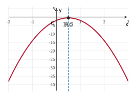
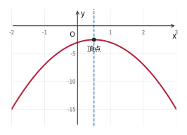
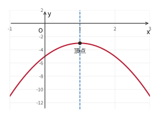

別冊練習問題 9 の解答 すべての実数で不等式が成り立つ条件（a の場合分け）
(1) すべての実数 \(x\) について \(ax^2+6x-2\leqq0\) が成り立つような定数 \(a\) の範囲を求めよ。
次数で場合分け
\(a=0\) のとき \(6x-2\leqq0\) は \(x\) が大きいと成り立たない。よって \(a\neq0\)。
例として \(a=-6\) のグラフ。上に凸で頂点が \(x\) 軸より下にあれば、すべての \(x\) で \(\leqq0\)。

2次不等式の条件
すべての \(x\) で \(\leqq0\) となるには、上に凸 \(a<0\) かつ 判別式 \(D\leqq0\)。
\[\dfrac D4=9+2a\leqq0\]解く
\(a\leqq - \dfrac{9}{2}\)（\(- \dfrac{9}{2}<0\) より \(a<0\) も満たす）。
\[a\leqq - \dfrac{9}{2}\]【答案】
\[a\leqq - \dfrac{9}{2}\]答
(2) すべての実数 \(x\) について \(ax^2+2x-3\leqq0\) が成り立つような定数 \(a\) の範囲を求めよ。
次数で場合分け
\(a=0\) のとき \(2x-3\leqq0\) は \(x\) が大きいと成り立たない。よって \(a\neq0\)。
例として \(a=-2\) のグラフ。上に凸で頂点が \(x\) 軸より下にあれば、すべての \(x\) で \(\leqq0\)。

2次不等式の条件
すべての \(x\) で \(\leqq0\) となるには、上に凸 \(a<0\) かつ 判別式 \(D\leqq0\)。
\[\dfrac D4=1+3a\leqq0\]解く
\(a\leqq - \dfrac{1}{3}\)（\(- \dfrac{1}{3}<0\) より \(a<0\) も満たす）。
\[a\leqq - \dfrac{1}{3}\]【答案】
\[a\leqq - \dfrac{1}{3}\]答
(3) すべての実数 \(x\) について \(ax^2+4x-5\leqq0\) が成り立つような定数 \(a\) の範囲を求めよ。
次数で場合分け
\(a=0\) のとき \(4x-5\leqq0\) は \(x\) が大きいと成り立たない。よって \(a\neq0\)。
例として \(a=-2\) のグラフ。上に凸で頂点が \(x\) 軸より下にあれば、すべての \(x\) で \(\leqq0\)。

2次不等式の条件
すべての \(x\) で \(\leqq0\) となるには、上に凸 \(a<0\) かつ 判別式 \(D\leqq0\)。
\[\dfrac D4=4+5a\leqq0\]解く
\(a\leqq - \dfrac{4}{5}\)（\(- \dfrac{4}{5}<0\) より \(a<0\) も満たす）。
\[a\leqq - \dfrac{4}{5}\]【答案】
\[a\leqq - \dfrac{4}{5}\]答